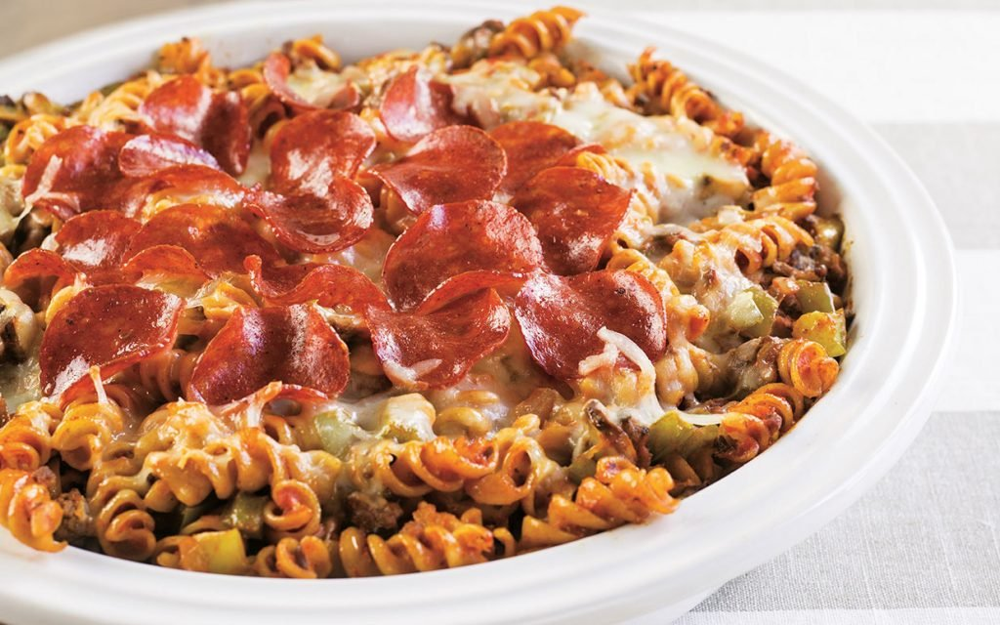

Pizza Pasta!

Pizza Pasta is a dish that is just cooked pasta mixed with pizza ingredients. This dish is just a fun way to enjoy the pizza flovor but in pasta form. It is also cheaper to make and can serve many poeple. I usually make this dish when I have family over, or when my daughter wants some pasta. We all love the fun rotini pasta and the fact that we always have left overs for lunch the next day.
Prep Time: 5 mins Cook Time: 40 mins Total Time: 45 mins
Servings: 8 servings
Ingredients
This is the list of ingredients you will need to make your delicious Pizza Pasta!:
- 12 Ounces of uncooked rotini pasta
- 1 Pound of ground beef
- 4 Cups of pasta sauce
- 3 Cups of mozarella cheese shredded
- 28 Slices of pepperoni
Instructions
Now that we have all out ingredients ready, lets go ahead and start making the pizza pasta!:
- Preheat oven to 350F
- Cook pasta accoriding to the package instructions.
- Cook the ground beef in a pan until brown. Make sure to drain the fat.
- Add the pasta sauce to the ground beef and let it simmer for a few seconds.
- Pour the pasta and the ground beef onto a bigger pan to place into the oven to bake.
- Lay pepperoni and cheese on top of the pasta and ground beef.
- Place into the oven and bake for 35-40 minutes or until cheese is melted.
- Once it is melting, carefully remove from oven and you are ready to enjoy your fun meal!
Explore More Recipes!